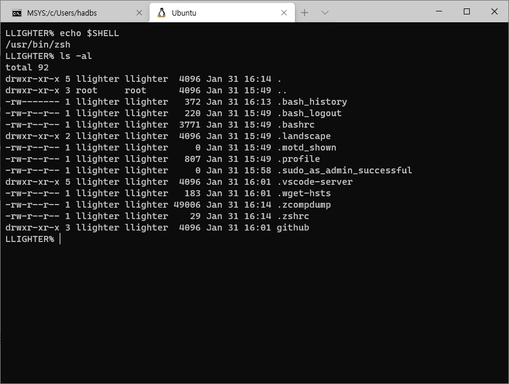

WSL2 Ubuntu에 ZSH 설치해서 터미널 꾸미기
Oh my ZSH을 설치해서 내 터미널을 꾸며보자

리눅스 환경이든 맥 환경이든 개발을 한다면 터미널을 선택이 아닌 필수이다. 4K 모니터에서 검은 배경에 흰 글자만 보고 있는 것보단 이왕이면 다양한 색상과 기능으로 편하고 즐겁게 개발을 하고자 한다면 ZSH을 선택해보자.
윈도우에서 WSL2를 통해 리눅스를 사용하던 일반적인 리눅스를 사용하던 처음 터미널 설정은 Bash 쉘로 구성이 되어 있다. 우리는 쉘을 ZSH로 변경하고 커스터마이징을 할 수 있도록 Oh my zsh을 설치하고 각종 편의 기능들을 적용해볼 것이다.
ZSH 설치 #
우분투 패키지 매니저인 apt를 이용하여 ZSH을 설치해보자.
sudo apt install zsh기본 쉘을 ZSH로 변경 #
이제 ZSH이 설치되었으니 기본 쉘을 bash에서 Zsh로 변경해보자. echo $SHELL 명령어를 입력하면 현재 내 터미널에 세팅된 쉘이 무슨 쉘인지 확인할 수 있다.
chsh -s $(which zsh)
Oh My Zsh 설치 #
이제 내 입맛에 맞게 터미널을 꾸미기 위해 Oh my zsh을 설치해보자. 설치 방법은 앞 링크에 자세히 나와 있고 나의 경우는 curl을 이용하여 설치했다.
sh -c "$(curl -fsSL https://raw.github.com/ohmyzsh/ohmyzsh/master/tools/install.sh)"
powerlevel10k 설치 #
powerlevel10k은 Zsh의 테마중 하나이다. 널리 쓰이면서도 유용한 정보를 적재적소에 제공해준다. 이 테마도 설치하는 방법이 여러가지가 있지만 우리는 방금 Oh my zsh을 설치했기 때문에 이를 이용하여 설치를 한다.
git clone --depth=1 https://github.com/romkatv/powerlevel10k.git ${ZSH_CUSTOM:-$HOME/.oh-my-zsh/custom}/themes/powerlevel10kZsh에 테마 적용 #
자 이제 방금 받은 테마를 우리 쉘에 적용해보자. Zsh은 홈디렉토리에 설정파일은 가지고 있는데 이 파일을 수정해줘야 한다.
# 홈 디렉토리로 이동
cd ~
# 설정파일 오픈
vi ~/.zshrc자 vi 이용법에 대한 것은 인터넷에 좋은 자료가 많기 때문에 여기서는 필요한 부분만 간단히 설명하기로 하자.
처음 vi 에디터로 설정파일(.zshrc)을 열면 명령모드 상태일 것이다. 혹시 입력모드이면 ESC 키를 눌러서 명령모드로 빠져나오도록 하자. 이제 우리가 수정할 위치를 찾아서 입력모드로 수정한다음 저장을 할 것이다. 명령어는 아래와 같다.
/ZSH_THEME입력 후 엔터i로 입력모드로 변경 한 후 기존 입력 값을ZSH_THEME="powerlevel10k/powerlevel10k로 수정ESC로 명령모드로 전환wq입력 후 엔터를 눌러 저장
자, 설정파일은 수정되었다. 설정은 자동으로 적용되지 않기 때문에 쉘을 재시작하거나 적용 명령어를 입력해줘야 한다.
source ~/.zshrc적용후에는 각종 설정들을 보기 형태로 묻고 내가 선택한대로 세팅이 진행된다. 세팅을 선호의 영역이기 때문에 정답은 없다. 좋아 보이는 것을 따라가자.
아래는 내가 적용한 테마이다.
유용한 Zsh 플러그인들 설치 #
Zsh 안에서는 터미널을 편리하게 이용할 수 있는 여러 플러그인들을 설치할 수 있는데 여기서는 3가지 정도를 설치해보자.
zsh-authsuggestions 설치 #
zsh-authsuggestions은 내가 사용한 기록을 기반으로 입력값을 추천해주는 플러그인이다. 이 플러그인만 있다면 한번 입력한 명령어는 다시 찾아볼 일이 없다.
git clone https://github.com/zsh-users/zsh-autosuggestions ${ZSH_CUSTOM:-~/.oh-my-zsh/custom}/plugins/zsh-autosuggestions적용 방법은 위에서 테마를 적용할 때와 같이 .zshrc 파일을 수정한 다음 적용하는 순으로 진행한다.
# 홈 디렉토리로 이동
cd ~
# 설정파일 오픈
vi ~/.zshrc/plugins입력 후 엔터i로 입력모드로 변경 한 후plugins=(git zsh_autosuggestions)로 수정ESC로 명령모드로 전환wq입력 후 엔터를 눌러 저장
Caution:
2번에서 plugins=(git zsh_autosuggestions) 입력값을 아무것도 설치안했다면 plugins=(git) 이었을 것이다.
여기에 zsh_autosuggestions 문구만 추가해주면 된다.
설정을 적용해주자.
source ~/.zshrczsh-syntax-highlighting 설치 #
자 이제 터미널을 다채롭게 해보자. 각종 명령어들을 색을 칠해 구분하게 해주고 틀린 명령어를 구분할 수 있게 해주는 zsh-syntax-highlighting 플러그인 이다.
설치 매뉴얼을 따라 설치해보자.
git clone https://github.com/zsh-users/zsh-syntax-highlighting.git
echo "source ${(q-)PWD}/zsh-syntax-highlighting/zsh-syntax-highlighting.zsh" >> ${ZDOTDIR:-$HOME}/.zshrc플러그인을 적용해보자.
source ./zsh-syntax-highlighting/zsh-syntax-highlighting.zsh적용한 결과이다. 보기 편하지 않은가?
zsh-z 설치 #
zsh-z은 터미널에서 디렉토리를 이동할 때 편리한 플러그인이다. 여러번 입력했던 디렉토리를 기억해서 어느 위치에서건 최종 디렉토리 명을 z some-directory와 같이 입력하면 바로 이동할 수 있다.
git clone https://github.com/agkozak/zsh-z $ZSH_CUSTOM/plugins/zsh-z# 홈 디렉토리로 이동
cd ~
# 설정파일 오픈
vi ~/.zshrc적용 방법은 위에서 테마를 적용할 때와 같이 .zshrc 파일을 수정한 다음 적용하는 순으로 진행한다.
/plugins입력 후 엔터i로 입력모드로 변경 한 후plugins=(git zsh_autosuggestions z)로 수정ESC로 명령모드로 전환wq입력 후 엔터를 눌러 저장
source ~/.zshrcWindows 터미널에서 색 구성표 적용하기 #
자, 여기까지 왔으면 기능상 기본적인 세팅은 모두 완료되었다. 마지막을 윈도우에서 할 수 있는 설정 하나 더 알려주며 이 포스트를 마친다.
Windows 터미널의 색 구성표에서 보이는바와 같이 터미널에 색 구성표를 적용하여 여러가지 색을 적용할 수 있다. 난 One Half Dark 를 선택했다 아래와 같이 적용해주면 된다.
Windows 터미널에는 alt를 누르고 설정 단추를 선택하여 액세스할 수 있는 defaults.json 파일 내에 이러한 색 구성표가 포함되어 있습니다. 명령줄 프로필 중 하나에서 색 구성표를 설정하려면 색 구성표의 name을 값으로 사용하여 colorScheme 속성을 추가합니다.
정리하며... #
이제 윈도우에서도 맥이나 리눅스에서와 같이 화려한 터미널 라이프를 즐길 수 있게 되었다. 터미널은 꾸미기 시작하면 끝이 없기 때문에 어느정도 세팅이 되었다 싶으면 사용하면서 하나하나 자기 자신에게 맞는 설정들을 추가해가는 것이 바람직하다. 나 또한 더 좋은 기능들이나 세팅이 있다면 여기에 업데이트 해두려고 한다.
메인 사진은 Unsplash에서Matt Artz님이 제공한 사진입니다.